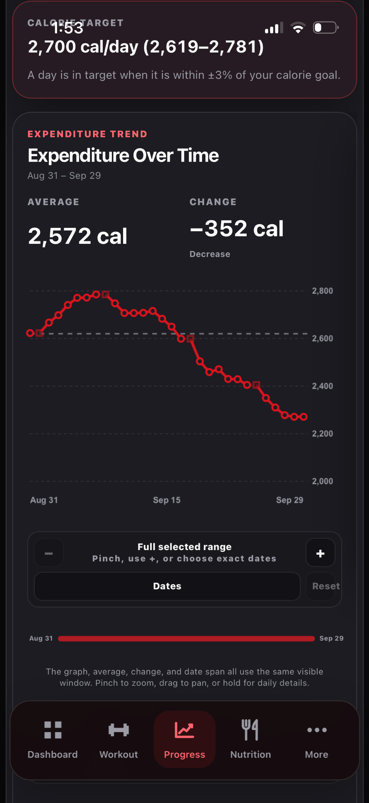
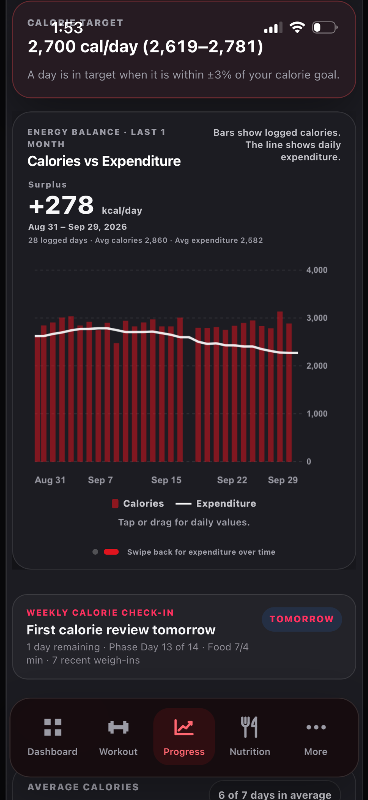

Understand calculated expenditure
See how food intake and weight history inform an energy estimate.
How to use it
- Log food consistently and add regular weigh-ins.
- Open Progress → Nutrition and review Expenditure Over Time.
- On Expenditure Over Time, compare the average and change across the selected date window. Swipe to Calories vs Expenditure to see logged intake against the estimate.
- Use the weekly review when enough data is available.
How to interpret it
This is an estimate from observed intake and body-weight changes, not a direct measurement of metabolism. Short-term water and gut-content shifts can distort the signal; interpret multiweek trends.
The two expenditure views

